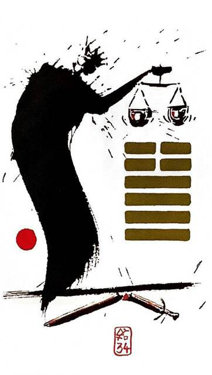

뇌천대장 (클 대,씩씩할 장)
평괘 16
활기차게 나아간다
온 세상을 뒤흔들 힘을 발휘한다덩치 큰 대장부가 천칭을 들고 냉철한 이성과 자신감으로계획을 세우는 상황을 표현한 그림
강력함.지휘력.역량.효능.최고의 컨디션.의지의 힘.권위.존엄.영향력.자신감.힘차다.성대하다.씩씩하다.기세등등.굳센 기상.능력 많다.열정
연애운
높은 기준.연애가 쉽지 않음
사업운
에너지 강하고 목표도 높다.리더면 좋다
속마음
썸깐깐하게 생각하며 저울질 하는 마음
1년 이상높은 기준으로 저울질 하는 마음
이별 후이별한 이유 생각하며 저을질 하는 마음
솔로연애운
생겨도 성에 안찬다
건강운
간경변.위장.신경과민